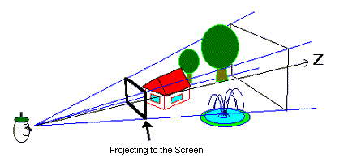

The view coordinate system puts the view (camera) at the point of origin and places the direction of the view along the Z-axis as demonstrated in this illustration:

Because the drawing processor (the RCP) is like a camera, this coordinate system is what the RCP hardware uses to view the virtual 3D world set up in the computer. The range actually seen is the part that falls inside the rectangular pyramid which is called the "view volume." This becomes the visual field, and a vertex of the rectangular pyramid is like the focus of a camera. The distance between the screen and focus is equal to the focal distance.
When the distance between the focus and screen is long, the angle of the visual field is narrow, and the image seems to be taken with a telephoto lens. When the distance is short, the angle of the visual field is wide and the image seems to be taken with a wide-angle lens.
Coordinates in the view coordinate system are expressed as (xv,yv,zv).
Nintendo® Confidential
Copyright © 1999
Nintendo of America Inc. All Rights Reserved
Nintendo and N64 are registered trademarks of Nintendo
Last Updated March, 1999